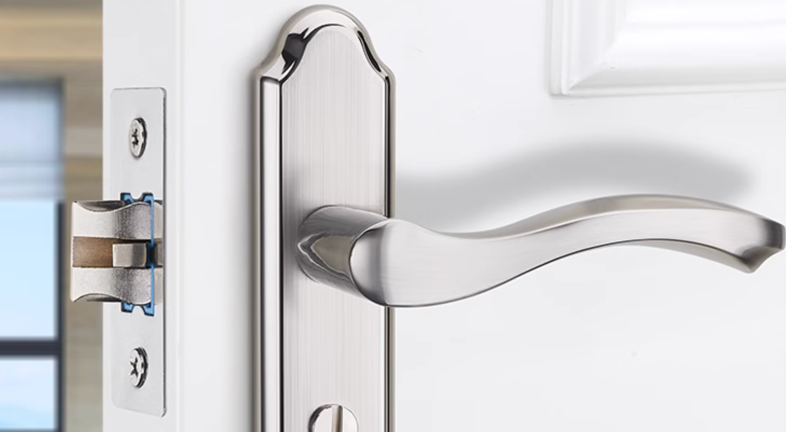

读过《红楼梦》的朋友一定对其中的一道菜印象深刻：「茄鲞」。王熙凤讲述这道菜的做法是：把才下来的茄子把皮削了，只要净肉，切成碎钉子，用鸡油炸了，再用鸡脯子肉并香菌、新笋、蘑菇，五香腐干、各色干果子，俱切成钉子，用鸡汤煨了，将香油一收，外加糟油一拌，盛在瓷罐子里封严，要吃时拿出来，用炒的鸡瓜一拌就是。
“鸡瓜子”是什么？就是用手撕出来的鸡小腿部分的腱子肉。因为常常活动，所以那块肉的弹性最好。富贵之家能把一个食之无味的茄子，经过这么复杂的环节来制作，做的这么精细。
还有一次宝玉被他的爸爸暴打后，王夫人问他想吃什么，宝玉回说：“也倒不想什么吃，倒是那一回做的那小荷叶儿莲蓬儿的汤还好”。这个莲蓬汤倒不是什么山珍海味，只是做起来很麻烦，当年元妃省亲时做过一次。因为是给皇帝准备吃的，非同小可，既不能过于奢华，又要十分讲究。莲蓬是用银模子刻出来的，库房的人把模子找出来后，薛姨妈看到后说：“你们府上都想绝了，吃碗汤还有这些样子。若不说出来，我见这个也不认得这是作什么用的”。薛姨妈也是大户人家，就连她都没见过这么精细的模子，可想而知贾家在饮食上有多么讲究了。
相较于富贵过好几代的家族，暴发户是不知道怎么吃的，以为大鱼大肉就叫吃了。富贵人家吃的其实并不是山珍海味，他们讲究的是做工的细腻，到最后就变成了文化。
除了在吃上，贾家在穿戴上也是非常讲究，举几个例子：贾母的软烟罗、平儿的虾须镯、宝玉的雀金裘、湘云的凫魇裘……。
通过上边这些内容，我想引出一个更普世的观点：没有钱的人永远无法想象有钱人过的是什么样的生活，平时会使用什么样的东西，就像段子中皇帝的金锄头一样。
下边用几个我使用过的稍微好一点的物品举例，这些物品价格确实会稍贵一点，但也不是什么奢侈品，限于我目前的人生阅历也只能用这些来说明了。
戴森吹风机
一个戴森吹风机3000多，普通家庭是绝对不会买的。我们家几年前一直在用其他品牌的吹风机，也没感觉有什么问题，后来我们帮一个保险销售介绍客户，完成了很多任务，作为奖励她送了我们一台戴森吹风机，自从用上以后就再也用不惯其他吹风机了。
前一阵子搬家，我把戴森拿到了新家使用，因为我爸妈还要在之前的房子住，那边需要一个新吹风机。我看到这两年一个国产的品牌「徕芬」吹风机很火，外形也和戴森很像，就买了一个给他们用。前两天我回家用了一次徕芬，实话实说，如果我之前没有用过戴森，我一定觉得这个吹风机非常好用，但用过了更好的对比之下才知道还有很大差距。
室内隐形门锁

传统的门锁都会外露一个弹簧的探头，用来在关门时将门卡住。探头上下两个角很尖，不注意时会磕碰到人，家里有小孩的情况下，如果小孩正好跟门锁差不多高，在跑来跑去时会更危险。日常关门时，因为探头要和门框上的凹槽摩擦，还会有很大的噪音。因为探头存在阻力，在关这种门时，通常是用手把门把手转到下边，再去将门关严，或者需要很用力地去关。
装修新房时，才知道现在已经有了无形的锁具，门在开启状态时探头是不会外漏的，只有将门关闭后探头才会弹出，避免了磕碰还更静音了。想把门关严时也不用捉着把手去关了，直接推门就可以。我没有研究它的原理，猜测是用了磁铁之类的。
花洒 && 零冷水
另一个和装修有关的是新家里的淋浴设备和零冷水燃气热水器。在我没有用新的花洒之前，没觉得之前用过的花洒有什么问题，用过之后觉得之前花洒水量太小了。前两天再去用之前的就觉得身上的沫子半天才能冲干净，新的淋浴一瞬间就冲完了。
还有支持恒温的零冷水燃气热水器，如果没有接触过，我真的不知道洗澡水居然可以不需要等待，每次打开直接出热水，温度也是之前设置好的恒定温度，完全不用担心忽冷忽热的问题。
自助餐
上个周末和家人去吃了一次比格自助，79一位。如果家庭条件一般，自助吃的比较少的话，就会觉得比格很不错了，当然比格在这个价位里也确实不错。但如果吃过更好的，就会知道比格的食材还差很多。
其实我也没什么资格评判比格，因为我吃的比较多的也是比格或者比格这个价位的自助，只是在公司团建的时候有幸吃过其他稍微高档一些的，比如第六季、水木锦堂之类的。但次数有限，那些更高级的，上千块的自助还没有体验过。
车
我现在只开过 20w 以内的车，已经觉得很好了。50w 以上的车还没有开过，更别提百万级别的豪车了。我相信我现在一定无法想象出开豪车的体验和惊喜。
如果我以后有机会能开上，再来更新使用体验😂